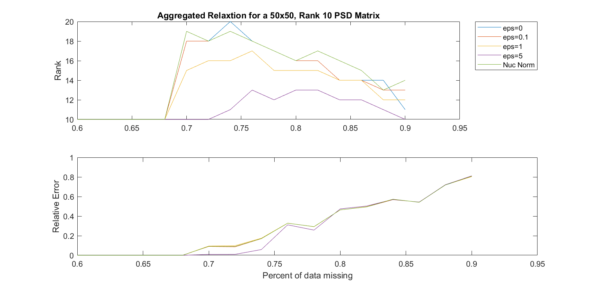
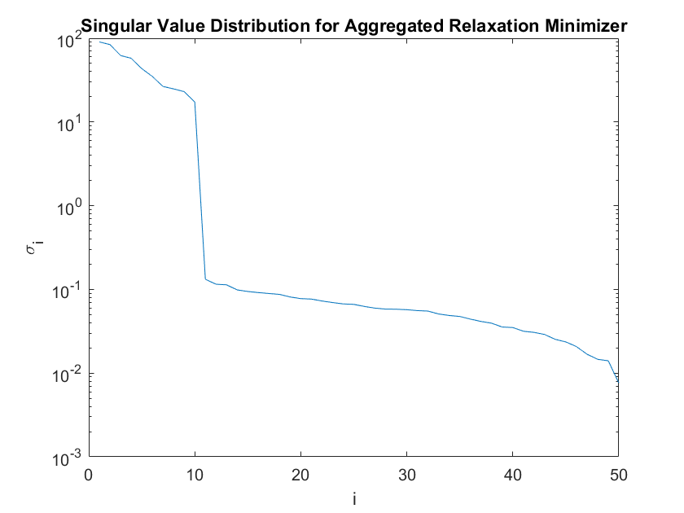
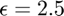
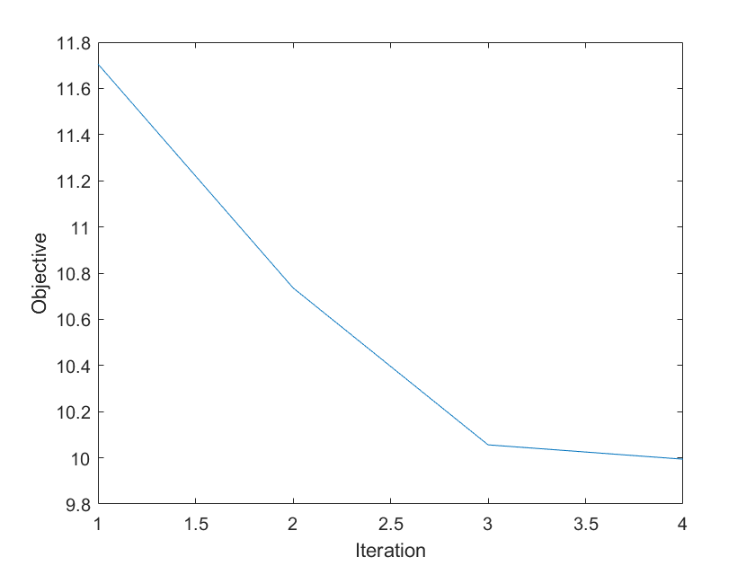

October 17th-24th, 2018 Notebook
Contents
Aggregated Relaxation Results
I found a bug in the code that made it so before, when the aggregated relaxation algorithm was giving the same results as the nuclear norm, it was only performing one iteration of the algorithm.
load('oct22run.mat') subplot(2,1,1) plot(pList, rankRes) title("Aggregated Relaxtion for a 50x50, Rank 10 PSD Matrix") hold on plot(pList, rankResnuc) legend(['eps=0', 'eps=0.1', 'eps=1',"eps=5", "Nuc Norm"],'Location','bestoutside') set(gcf, 'Units', 'Normalized', 'OuterPosition', [.2, 0.2, .8, 0.8]); ylabel("Rank") subplot(2,1,2) plot(pList, relErr) hold on plot(pList, relErrnuc) ylabel("Relative Error") xlabel("Percent of data missing")
What it looks like when Aggregated Relaxation does better than Nuclear Norm
For the case of ~70% missing data, the Nuclear Norm fails to reconstruct a rank 10 solution, while the Aggregated Relaxation for $ \epsilon = 2.5 $ does. The SVD of this result looks like this. What we see is the first 10 singular values are all approprietely large, while the last 40, which are zero for the original matrix, are all less than a threshold dependent on . As goes to zero, I would think these entries would too.
pavg=0.70; eps=2.5; x=randn(10,50); D=x'*x; [ M,b,row,col ] = sampleUniform( D,pavg); P=~(M==0); [X,U, obj]= aggregatedRelaxationPADM(M,P, eps,zeros(size(M))); figure() semilogy(svd(X)) xlabel("i") ylabel("\sigma_i") title("Singular Value Distribution for Aggregated Relaxation Minimizer")
As goes to zero:
We showed that starting at a low value of gives bad results, so now we start at 2.5 and decrease epsilon in every run, using the previous problems minimizer as the starting point for the new one, as done with previous SDCMPCC relaxations
eps=[2.5, 2, 1.5, 1, 0.75, 0.5, 0.25, 0.125,0.0625 , 0.03125];
Xeps={X};
[u, s, v]=svd(Xeps{1});
fprintf("Eps: %f \t 11th largest sv :%f \t Rel Error: %f \n",eps(1), s(11,11), norm(Xeps{1}-D, 'fro')/norm(D, 'fro'));
for i=2:length(eps)
[Xeps{i},U]= aggregatedRelaxationPADM(M,P, eps(i),Xeps{i-1});
[u, s, v]=svd(Xeps{i});
fprintf("Eps: %f \t 11th largest sv :%f \t Rel Error: %f \n",eps(i), s(11,11), norm(Xeps{i}-D, 'fro')/norm(D, 'fro'));
end
Eps: 2.500000 11th largest sv :0.132180 Rel Error: 0.004468 Eps: 2.000000 11th largest sv :0.107383 Rel Error: 0.003617 Eps: 1.500000 11th largest sv :0.081637 Rel Error: 0.002753 Eps: 1.000000 11th largest sv :0.053444 Rel Error: 0.001812 Eps: 0.750000 11th largest sv :0.039001 Rel Error: 0.001317 Eps: 0.500000 11th largest sv :0.027019 Rel Error: 0.000908 Eps: 0.250000 11th largest sv :0.013677 Rel Error: 0.000454 Eps: 0.125000 11th largest sv :0.007304 Rel Error: 0.000238 Eps: 0.062500 11th largest sv :0.003662 Rel Error: 0.000119 Eps: 0.031250 11th largest sv :0.001843 Rel Error: 0.000060
Convergence
I'm actually just using ADMM for this, even though it has no convergence gaurentees that I know of. I've tried adding a proximal term, but it ended up doing worse. Perhaps theres a bug, or it just needed longer to converge. However, it does seem to do very well. Here is the objective value at each iteration for the  run
figure() plot(obj) xlabel("Iteration") ylabel("Objective")